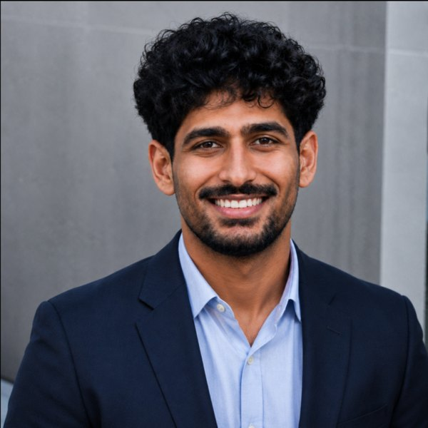

Electrical engineer at Cal Poly. I build hardware and the software that watches it. Looking for a Summer 2027 internship in hardware, GPU, or ML systems.
SCROLL

Amogh SomisettyElectrical Engineering, Cal Poly SLO
Contact
I'm looking for a Summer 2027 internship in hardware, GPU, or ML systems. Email is the fastest way to reach me.